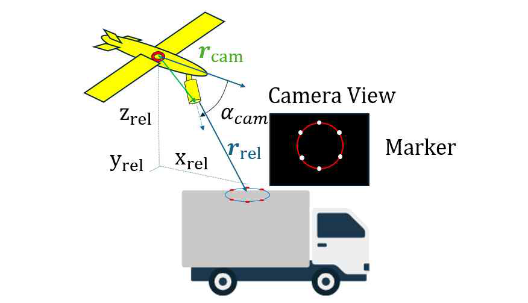
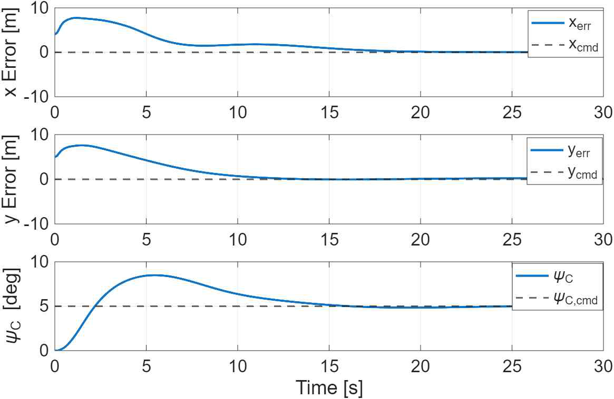

대표 연구
영상기반 정밀접근
고정익 무인기의 지상이동체 정밀접근을 위한 영상기반 상대항법 및 벡터필드 유도 한국항공우주학회 2026 추계학술대회, 1저자
연구 질문
근거리에서는 일반 항법정보만으로 상대위치를 정밀하게 파악하기 어렵습니다. 고정익 무인기가 이동 중인 지상이동체에 정밀하게 접근하려면, 카메라 영상으로 상대위치를 어떻게 추정하고 그 값으로 유도 명령을 어떻게 만들어야 할까?

내가 한 일
아래 작업은 이 연구를 위해 진행했습니다.
- 논문을 직접 쓰고 1저자로 발표했습니다. 저자에는 교수님과 함께 기재했습니다.
- 식 유도와 구현은 reference 모델을 보고 직접 적용했습니다.
- 영상기반 상대위치 추정: 지상이동체 상부에 원형으로 배치한 적외선 마커의 영상으로 상대위치를 계산하고, 카메라 장착 위치와 장착각을 반영해 기체고정 좌표계로 변환한 뒤, 확장 칼만필터로 GPS 기반 상대위치와 융합했습니다.
- 정밀접근 유도: 추정한 상대위치와 지상이동체 진행방향으로 코스각과 속도명령을 만드는 벡터필드 기반 2차원 유도방법을 구성했습니다.
- 검증: 유도기법을 6자유도 비선형 비행동역학 모델에 적용해 시뮬레이션했습니다.
알아낸 것
- 시뮬레이션에서 무인기가 지상이동체 진행방향에 정렬하며 목표 상대위치로 수렴했습니다.
- 수렴 시간과 최종 오차는 수치로 적지 않고 논문에 그래프로만 넣었습니다.

다음 할 것
이 연구 이후에는 정밀접근하는 방법으로 진행할 계획입니다.